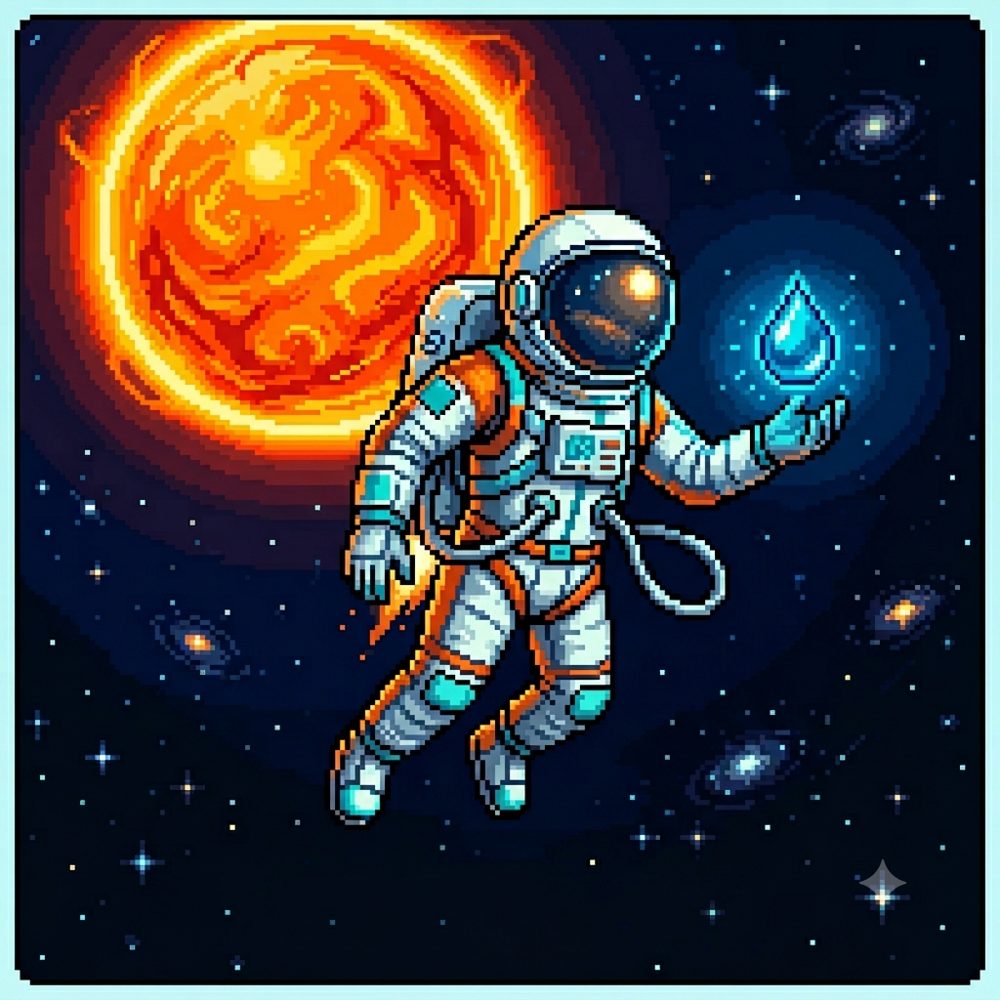
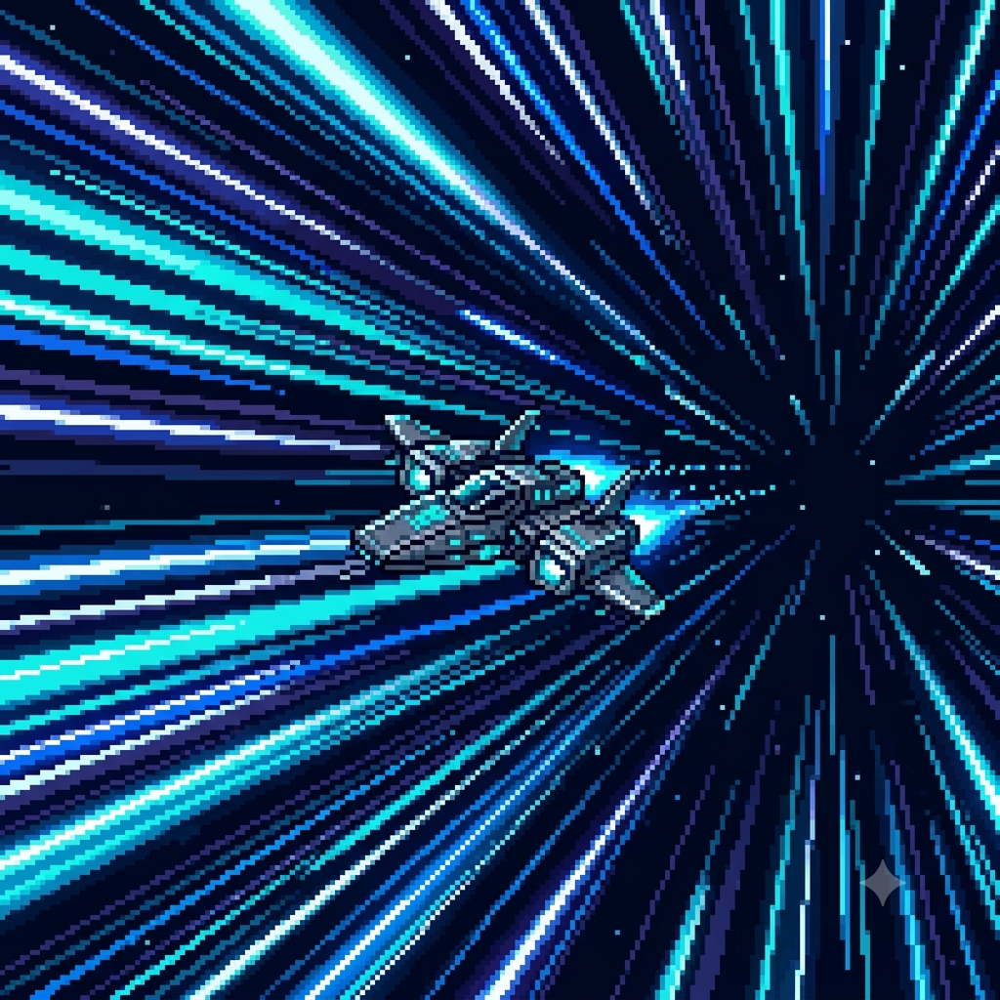

Acelerando sua mente no ritmo da Inteligência Artificial e do Pixel Art!

Criando uma Galáxia Artificial com IA e Piskel
Por: Mirella Nogueira
Você já imaginou criar uma Galáxia Artificial inteira usando códigos? Com o avanço da IA generativa, algoritmos agora simulam sistemas cósmicos complexos em segundos. Usando o Piskel, transformamos esse visual na clássica estética retro pixel art!
O Nascimento de Estrelas Digitais
Colaboração: Marcelo Silva
Integrar ferramentas de IA nos dá um ponto de partida incrível para paletas de cores e composições espaciais. No nosso laboratório conjunto, alimentamos redes neurais para gerar conceitos astronômicos e os refinamos frame por frame dentro do editor do Piskel.

Algoritmos de IA na Arte de 8-Bits
Por: Mirella Nogueira
O limite entre a automação inteligente e o design manual está sumindo. Criar texturas para nebulosas artificiais ficou muito mais prático quando unimos matemática procedural à simplicidade técnica das grades limitadas do pixel art clássico.